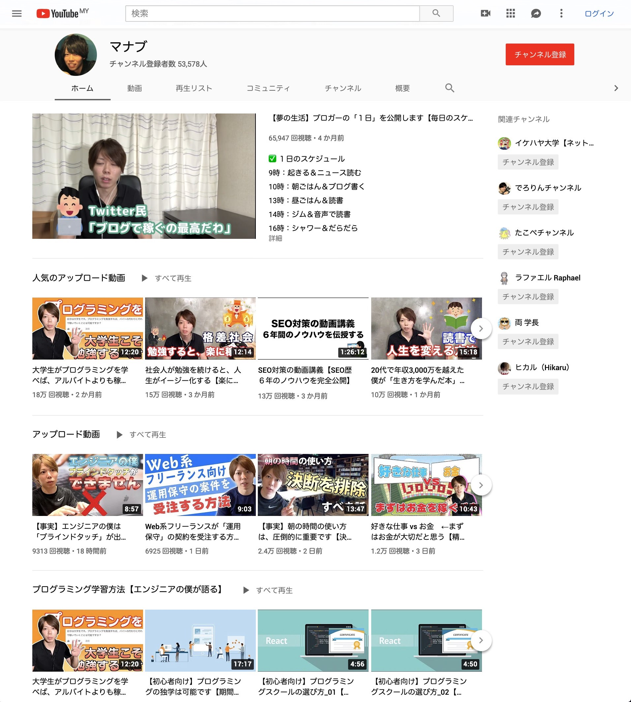

![ロゴ]()
【体験談】YouTubeが伸びないときの対処方法【本気の解説をします】
こんにちは、マナブです。
YouTubeを始めて５ヶ月で、チャンネル登録５万人を超えました。
月間の広告収益は、30代のサラリーマン給料くらいです。
先日に下記のツイートをしました。
✅YouTubeが伸びない時の対処法
・コンテンツ力を強化
・毎日学び、毎日改善
・YouTubeSEOを学ぶ
・コメントをよく読む
・マイチャンネル整理
・毎日１本、投稿する
・統一性を、意識する
・SNS発信も強化する
・広告でブーストするこれらを意識したら、５ヶ月でチャンネル登録５万人を超えました
— マナブ@バンコク (@manabubannai) March 13, 2019
✅YouTubeが伸びない時の対処法 ・コンテンツ力を強化 ・毎日学び、毎日改善 ・YouTubeSEOを学ぶ ・コメントをよく読む ・マイチャンネル整理 ・毎日１本、投稿する ・統一性を、意識する ・SNS発信も強化する ・広告でブーストする これらを意識したら、５ヶ月でチャンネル登録５万人を超えました
上記のツイートを深掘りします。
なお、僕が運営するチャンネルは「ビジネス層向け」に運営しています。
なので、ノウハウも「ビジネス層をベースに考えている」という感じですが、とはいえ、別ジャンルでも適用可能だと思っています。
記事を読みつつ「ふむふむ、、、じゃあ、これを自分のチャンネルに応用するには、どうすべきか？」と考えつつ読んでみてください。
YouTubeが伸びないときの対処方法【本気の解説】
次のとおりですが、ちょっと長くなりそうなので、できるだけ簡潔にまとめていきます。必要な場所だけ読む感じでもOKです。
- その①：コンテンツ力を強化
- その②：毎日学び、毎日改善
- その③：YouTubeSEOを学ぶ
- その④：コメントをよく読む
- その⑤：マイチャンネル整理
- その⑥：毎日１本、投稿する
- その⑦：統一性を、意識する
- その⑧：SNS発信も強化する
- その⑨：広告でブーストする
その①：コンテンツ力を強化
ここが最重要で、最も難しいのですが、、、ここを高めていかないと、YouTubeを伸ばしていくのは不可能だと思います。
コンテンツ力の本質は、問題解決です
コンテンツの本質は問題解決です。
世の中には人気YouTuber、人気インスタグラマー、人気ブロガーがいますが、みなさん問題解決をしています。
- 人気YouTuber：みんなが気になる企画などを考え、「実際にやってみるとどうなるか」という疑問を解決する
- 人気インスタグラマー：もっとお洒落になりたいとか、もっと綺麗な写真を撮りたい、、と思う人の問題解決をしている
- 人気ブロガー：読者が気になることを調査して、その解決策を記事にする。もしくは、読者の疑問点を、自分の実体験から語りつつ解決する
ざっくり上記のとおりです。
そして、ここで質問です。
ゲーム配信なら、本当はゲームをしたいけど時間がない人の問題を解決していますよね。もしくは、ゲームでうまくなりたい人の疑問点を解決していますよね。
おもしろ動画なら、人生で疲れた人に癒やしを与えていますよね。化粧動画なら、どうやったら綺麗になれるかを解決していますよね。
こういった感じで「誰の、どういった問題を解決するのか」を考えましょう。
YouTube発信は、準備が95%です
YouTubeは動画なので、いきなり撮影する人がいますが、それじゃあNGです。
- 企画案を考える（10%）
- 企画の詳細を考える（85％）
- 撮影＆編集＆公開（5%）
割合的には上記の感じですね。
大半のYouTuberは「編集が大変・・・」といいますが、、その編集は本当に必要ですか？
編集なしでも伸びている人がいますよね。
本質を見るべきです。その本質が「視聴者の問題解決」です。
その②：毎日学び、毎日改善
毎日データを見ましょう。そして毎日改善しましょう。
インストールすべきアプリ

{kind=link}
上記のアプリでチャンネル登録の伸びを確認できます。毎日の伸びを確認しつつ、伸びていないなら改善するだけです。
- なぜ、チャンネル登録が伸びないのか
- なぜ、視聴回数が伸びないのか
- なぜ、チャンネル登録”率”が伸びないのか
上記に関して、無限ループで自問自答してください。
そして、答えがわからないなら、とりあえず「自分と似ていて、かつ伸びている人を真似る」とかでOKです。
毎日改善しなかったら、途中で伸び悩みます。しかし、考え方によっては、毎日改善したら、毎日伸ばせるということです。
その③：YouTubeSEOを学ぶ
ここも重要です。世の中では「YouTubeにSEOは必要ない」という声もありますが、そんなことないです。
YouTubeSEOを意識することで「積み上げ式のアクセスアップ」を狙えます。
やらない手はないです。ここは別記事にまとめました。
» 【攻略法】YouTubeのSEOは、かなりヌルゲーな件【簡単に勝てるよ】
その④：コメントをよく読む
コメントはすべて読みましょう。
そして、すべてに返答し、すべてにライクしましょう。そして、コメント主に感謝しましょう。
例えそれがアンチでも、そこから学びがあります。
うーむ、YouTubeは面白い😌
やはり、みなさん学歴とかをめっちゃ気にするみたいですね。別に、ビジネスと学歴は関係ないのに…。
とはいえ、こういったコメントはかなり勉強になる。簡単な例だと、中卒でも月収100万円を達成できるのか、みたいな動画は、たぶん再生されやすい pic.twitter.com/cl9fkISVXX— マナブ@バンコク (@manabubannai) January 30, 2019
上記は別に批判じゃないですが、こういったコメントを見ることで「YouTubeの視聴者が気になること」が見えてきます。
気になることが見えてきたら、その仮説に基づいて動画制作をするだけです。
なお、再現性の高い方法としては、コメントで質問されたことに対して、動画で回答するとかでOKです。これだと視聴回数を伸ばしやすいですよ。
その⑤：マイチャンネル整理
マイチャンネルとは自分のチャンネルのトップページのことです。
参考例：僕のチャンネルのトップページ

こういった感じで、整理しましょう。最低限抑えるべきは下記です。
{kind=link}
- 自分が「何者か」がわかる動画をトップに設置する
- 人気動画をリスト表示する（クリックされやすい）
- 新着動画をリスト表示する（既存客向けの設置）
上記の感じですね。
もちろん完全な正解はありませんが、上記がベースとなる考え方のはずです。
あとは、自分で分析しつつ応用してください。
その⑥：毎日１本、投稿する
YouTubeが伸びないという人は、作業量が少なすぎですね。
トップ層が毎日１本は更新しているので、本気でYouTubeを伸ばしたいなら、毎日更新は必須かと。
そして、先ほど「毎日学び、毎日改善しましょう」という解説をしましたが、毎日投稿とセットでやるべきですね。
毎日投稿して、毎日改善して、、、という繰り返しです。
毎日更新が「圧倒的にシンドい場合」の対処方法
こういった話をしても、実際に毎日更新出来ない人が大半だと思います。
解決策は、１つの動画にかける工数を減らすことです。
- 動画を編集せずに公開する
- 動画編集を外注する
基本的には上記の選択肢かなと思い、大半の人は前者の選択肢を使うべきかなと思います。
コンテンツ力があれば編集なしでも伸びますからね。まずは未編集でコンテンツ力を鍛えていき、収益が伸びてきたら編集を外注するなど。
ちなみに僕は編集は外注済みです。
その⑦：統一性を、意識する
ここは僕が失敗した点です。YouTubeが伸びてきた僕は、勘違いをしていました。
僕が失敗した勘違い
視聴者の方には申し訳ない限りです。チャンネル登録が少し伸びただけで天狗になっていました。
大切なことは「自分に価値はないので、徹底的に視聴者の問題解決にフォーカスすること」ですね。
そしてその際に、僕は「自分が人気である→日常生活も発信すべき」という思考になっており、ここがダメでした。
当たり前ですが、僕の日常なんて需要ありませんからね。ここに気付いたときに、自己満足のような動画はすべて削除し、チャンネルを整理しました。
そしたらチャンネル登録が伸びやすくなったので、この仮説は間違っていなかったと思います。
補足：日常生活は「サブチャン」でいいかも
日常生活はサブチャンネルでの発信もありですね。
視聴者が100名いたら、そのうち３％くらいはファン層かもなので、そのファンに向けて日常生活を発信する感じです。
ここはあまり時間をかけず、息抜き程度にサブチャンネル運営でいいかなと思っています。
その⑧：SNS発信も強化する
ここも大切ですね。
現代は「メディアミックス」で戦うべきなので、YouTubeを頑張りたいなら、その他でTwitterやインスタも頑張るべきです。
僕はビジネス系のYouTuberを目指しているので、Twitter発信を頑張っています。
美容系YouTuberとかなら、インスタ発信がいいと思いますね。
SNS運用のノウハウは、下記にまとめています。
» Twitterでフォロワーを増やす方法【失敗する理由は超簡単です】
その⑨：広告でブーストする
お金に余裕があるなら、札束でブーストできます。
幸いなことに、僕は余剰資金があったので「毎日２万円くらい」の広告費を払い、YouTubeのチャンネル登録を伸ばしています。
基本的な広告配信方法のまとめ
YouTube広告を整理しました😌
・ディスカバリー広告
・インストリーム広告
・ディスカバリー広告のリマーケ
・インストリーム広告のリマーケ基本的には上記の４パターンでいいかなと思っています。チャンネル別にターゲティングもできるので、様子見つつそちらもトライしてみます
— マナブ@バンコク (@manabubannai) December 28, 2018
基本的には上記のとおりです。
言葉の解説も補足すると、下記です。
✅YouTube広告の基礎知識
・インストリーム広告→動画の最初に流れる「動画形式」の広告
・ディスカバリー広告→検索画面に表示される「テキスト形式」の広告めっちゃ基礎知識ですが、用語が分かりづらいので整理しました。なお、双方の広告方法は、キーワードなどで詳細なターゲティングも可能です
— マナブ@バンコク (@manabubannai) December 28, 2018
なお、実際に広告運用してみたところ「インストリーム広告は費用対効果が悪い」ということが判明しました。
ここは僕の広告技術が低いからかもですが、他の友人YouTuberからも同じ声が出ているので、わりかし信頼があるかなと。
広告の基本は「PDCA」です
YouTube広告はチャンネルによっても全然効果が変わると思います。
やるべきことは「まずは薄く広く配信してみて、費用対効果の低い施策を停止していく」ということです。
完全な正解は存在しないので、試行錯誤してみてください。
YouTubeが伸びない場合に、ほぼ確実に勝つ方法
{kind=link}
まずは半年間、継続しよう
ぶっちゃけ99%がここで挫折すると思いますが、、YouTubeを伸ばすのには時間がかかります。
僕はYouTubeを５ヶ月でチャンネル登録５万人まで伸ばすことができましたが、その理由は「ブログを６年間、続けていた」という事実があるからだと思います。
しかし、コツコツと続け、改善を繰り返し、ある時から作業量を大幅に増やしたところ、ブログで稼げるようになった、という感じです。
YouTubeのチャンネル登録＝信頼です
ちょっと語弊があるかもですが、YouTubeの登録数は「あなたに対する信頼」です。
人気YouTuberが商品を紹介したら、一気に売れますよね。それは、日々の発信で、視聴者との信頼関係を構築しているからです。
時間をかけて、常に視聴者の問題解決にフォーカスして、あなたの動画をみて「楽しかった」とか「参考になった」と思う人を増やしていけば、徐々に信頼が伸びるはずです。
視聴者に貢献することを、楽しもう
というわけで、今回はこれくらいにしようと思います。
最後に１つだけ付け加えると「YouTubeで視聴者に貢献することを、楽しむこと」ですね。
ほぼ確実に、YouTubeを頑張っても半年以上は伸びないと思いますので、それでも続けるには「楽しむ」ということが必須かなと。
そして「好きこそ物の上手なれ」ということわざがありますが、好きだからこそ、常にYouTubeのことを考えて、常に改善していけますよね。
最初に目指すべきは「チャンネル登録３万人」だと思います。
ここを達成できたら、YouTubeで食べていく、ということが実現できますので、ぜひコツコツ頑張ってみてください。
P.S：普段の僕は「Twitter」を軸に発信しています。また最近は「Webマーケ教材」の作成に注力しており、ネットで稼ぐスキルを学べます。ブログの更新通知は「メルマガ」から送っています。スパムは送りません。更新通知だけ送ります。